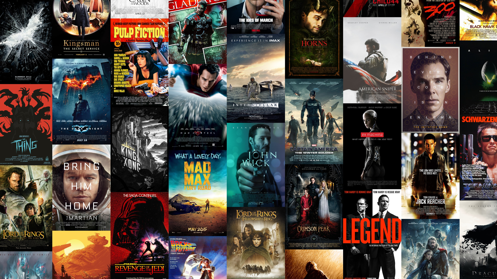

Projet Python et PowerBI
Ce projet vise à développé un dashboard interactif pour une chaine de supermarchés, destiné à aider les dirigeants
dans leurs prises de décisions stratégiques. Ce dashboard présente des indicateurs de performance clés, ainsi qu'une
analyse des ventes par branche et par catégorie de produits. Il inclut également des tendances de vente sur le temps
et des graphiques sur la satisfaction clients, permettant ainsi une vision complète et détaillée des performances
de la chaine.

Les données permettent d'analyser les tendances des licenciements des entreprises, en fonction de paramètres comme: son secteur, son pays, son stade de développement, etc.
Le projet se décompose en deux parties; dans la première il s'agit de nettoyer le dataset, puis, dans la second une Analyse Exploratoire des Données est réalisée.
Dans ce projet de data science, l'objectif est de prédire la
réutilisation du premier étage des fusées Falcon 9 de SpaceX,
un facteur clé dans la réduction des coûts de lancement spatial.
En effet, SpaceX se distingue par sa capacité à récupérer et réutiliser
le premier étage de ses fusées, ce qui permet de diminuer considérablement
les coûts des lancements spatiaux, comparés aux autres prestataires.
En analysant des données publiques sur les lancements précédents de SpaceX,
il est question d'entrainer un modèle de machine learning pour prédire si
le premier étage d'une fusée sera récupéré avec succès.

Ce projet explore un dataset recensant les 1000 meilleurs films répertoriés sur IMDb,
avec une variété de caractéristiques telles que la durée, le réalisateur, les revenus,
et bien d'autres encore. L'objectif est de nettoyer les données, de les explorer
et de réaliser une analyse exploratoire afin de mieux comprendre les spécifités de ces films ainsi
que les tendances entre ses caractéristiques.
Ce projet vise à concevoir un tableau de bord interactif pour un vendeur de café,
lui permettant de suivre et d'analyser l'évolution de ses ventes selon différentes
caractéristiques. Pour cela, nous utilisons une base de données structurée autour de
trois tables : la première répertorie les ventes effectuées, la seconde regroupe les
informations sur les clients, et la troisième présente les produits vendus. Ce tableau
de bord offrira une vue d'ensemble complète, facilitant ainsi la prise de décision grâce
à une meilleure compréhension des tendances de vente et des comportements des clients.